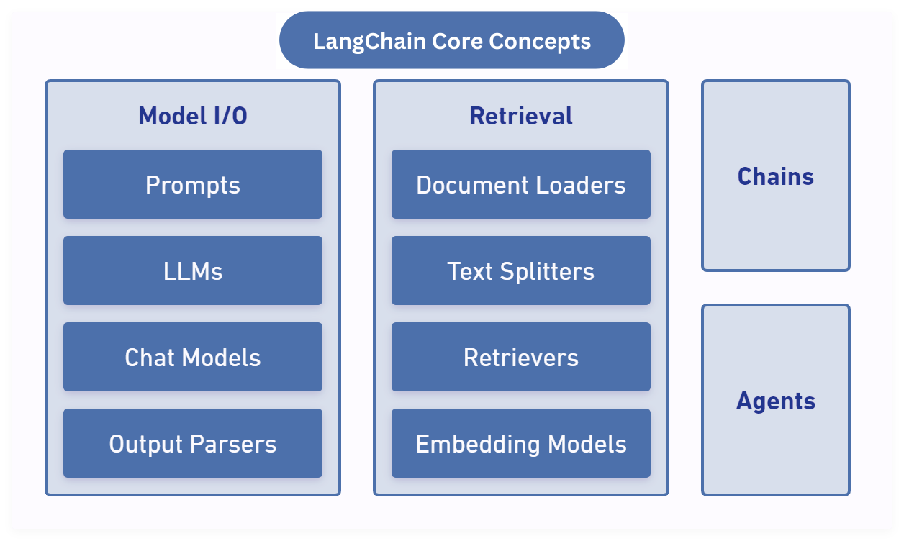

If you are someone who is interested in building AI applications, you must have come across the word “LangChain”. LangChain has quickly become one of the go-to frameworks for leveraging language models in a variety of real-world applications.
LangChain is a combination of two words:
In simple terms, LangChain is an open-source framework that simplifies the process of developing powerful applications by leveraging language models. It allows you to create complex workflows, integrate external tools, and manage chains of operations, making it an essential tool for developers working with natural language processing (NLP) and large language models (LLMs).
Most LLMs are trained on publicly available data, which means they have a limited scope of knowledge when it comes to specific use cases or proprietary data. This leads to questions about how we can customize LLMs for more personalized applications.
Yes, it is possible, and LangChain provides a way to seamlessly combine LLMs with your own data, allowing for more tailored solutions. With LangChain, you can feed custom data into models, enrich their responses, and fine-tune the outcomes to suit your unique requirements. This opens up the possibility of creating highly specialized applications, such as domain-specific chatbots, recommendation systems, or data-driven tools, that go beyond the generic capabilities of pre-trained models.
LangChain's flexibility allows developers to:
This powerful combination makes LangChain a game-changer for those building sophisticated AI applications.
 Fig.1. Langchain Core Concepts
A prompt is a set of instructions provided by the user to the model. Prompt template is a template which consists of predefined prompts for language models.
from langchain.prompts import PromptTemplate
# Define the prompt template with placeholders
template = "Hello, {name}.I hope you're feeling {mood}."
# Initialize the prompt template
prompt = PromptTemplate(input_variables=["name", "mood"], template=template)
# Generate the final prompt by providing values for the placeholders
final_prompt = prompt.format(name="Alice", mood="great")
print(final_prompt)
Document Loaders can be used to load data from different sources. A document is a piece of text and associated metadata.
TextLoader)PyPDFLoader)WebBaseLoader or BeautifulSoupHTMLLoader)CSVLoader)JSONLoader)
from langchain.document_loaders import TextLoader
loader = TextLoader("sample.txt")
documents = loader.load()
print(documents) # Prints the list of Document objects
from langchain.document_loaders import PyPDFLoader
loader = PyPDFLoader("sample.pdf")
documents = loader.load()
print(documents) # List of Document objects with PDF content
from langchain.document_loaders import BeautifulSoupHTMLLoader
loader = BeautifulSoupHTMLLoader("https://example.com")
documents = loader.load()
print(documents) # Extracted text from the HTML pages
from langchain.document_loaders import CSVLoader
loader = CSVLoader("data.csv")
documents = loader.load()
print(documents) # Loaded rows as Document objects
from langchain.document_loaders import JSONLoader
loader = JSONLoader("data.json")
documents = loader.load()
print(documents) # Loaded data as Document objects
 Fig.2. Tools
Fig.2. Tools
The component that allows LLM to connect with external services is called a Tool.
There are two main ways to use tools: chains and agents.
A chain in LangChain is a sequence of interconnected components that process the user's input step-by-step. Each component in the chain takes the output from the previous one as input. This creates a pipeline of processing steps.
# Example of building a chain
chain = prompt | llm | output_parser
LECL is a high-level abstraction that simplifies constructing chains using a simple and human-readable format.
chain = prompt | model | output_parser
The core idea of agents is to use a language model to choose a sequence of actions to take. In chains, a sequence of actions is hardcoded (in code). In agents, a language model is used as a reasoning engine to determine which actions to take and in which order.
One of the most common ways to store and search over unstructured data is to embed it and store the resulting embedding vectors, and then at query time to embed the unstructured query and retrieve the embedding vectors that are 'most similar' to the embedded query. A vector store takes care of storing embedded data and performing vector search for you.
 Fig.3. Vector Database
Fig.3. Vector Database
Text can be split into smaller chunks that fit within the model's context window.
Retrievers are used to return documents based on a query. They don’t store documents themselves but interact with vector stores.
Output Parsers help convert the responses generated by Language Models into a more usable form. These responses are often unstructured text, which parsers format into structured formats such as JSON or lists.
from langchain.output_parsers import StrOutputParser
output_parser = StrOutputParser()
parsed_output = output_parser.parse("Hello, world!")
print(parsed_output) # "Hello, world!"
from langchain.output_parsers import CommaSeparatedListOutputParser
parser = CommaSeparatedListOutputParser()
parsed_output = parser.parse("apple, banana, cherry")
print(parsed_output) # ['apple', 'banana', 'cherry']
from langchain.output_parsers import JsonOutputKeyParser
parser = JsonOutputKeyParser(key_name="name")
parsed_output = parser.parse('{"name": "Alice", "age": 25}')
print(parsed_output) # "Alice"
from langchain.output_parsers import RegexParser
parser = RegexParser(regex=r"Name: (.*), Age: (\d+)", output_keys=["name", "age"])
parsed_output = parser.parse("Name: Bob, Age: 30")
print(parsed_output) # {'name': 'Bob', 'age': '30'}
To wrap things up, LangChain is an incredibly powerful and flexible framework that makes it easier than ever to work with language models. Whether you're building AI assistants, integrating various data sources, or enhancing your NLP workflows, LangChain provides all the necessary components to bring your ideas to life.
By combining language models with your own data, you can create highly customized, domain-specific solutions. LangChain’s core concepts, including prompt templates, document loaders, chains, and tools, make it straightforward to build complex applications without reinventing the wheel. The ability to create intelligent pipelines that chain multiple tasks together is a game-changer for developers working in AI and machine learning.
LangChain’s open-source nature and the growing community around it ensure that it will continue to evolve, providing even more ways to harness the power of language models. Whether you’re a beginner looking to explore NLP or an experienced developer building sophisticated AI systems, LangChain is a framework worth considering. As the AI landscape continues to grow, LangChain is here to simplify the process and help you build smarter, more efficient applications. So, if you’re ready to take your AI projects to the next level, LangChain is the tool you need to make it happen.
In our next blog, we will dive deeper into LangChain by building a simple summarizer tool. This tool will show you how to use LangChain to automatically summarize long texts, youtube videos, helping you create more efficient applications. Stay tuned!